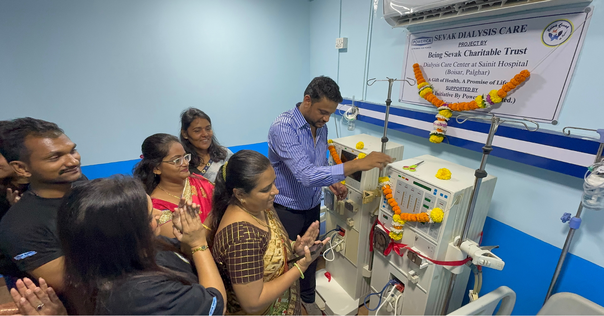
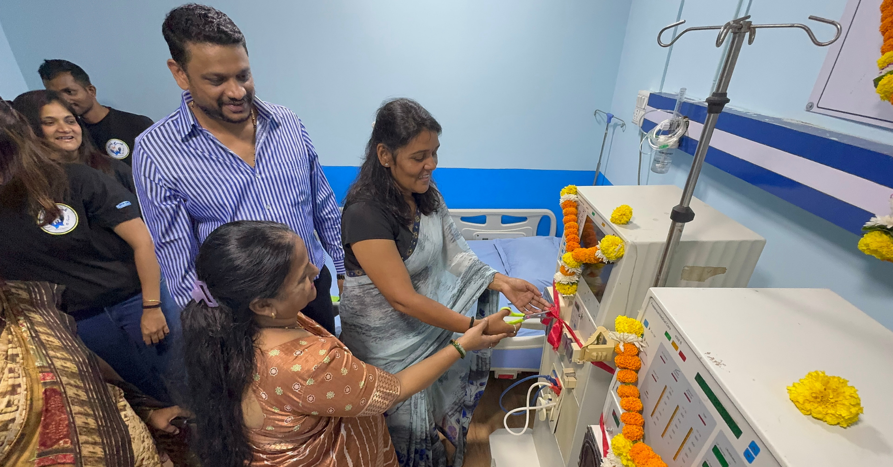
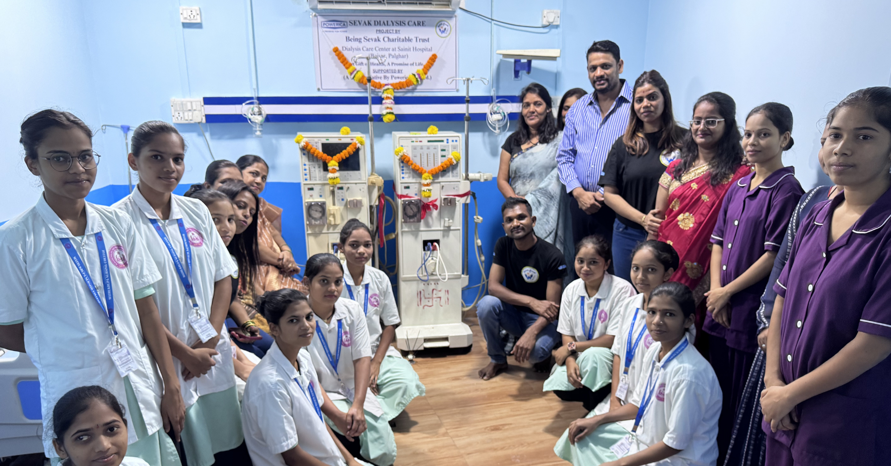
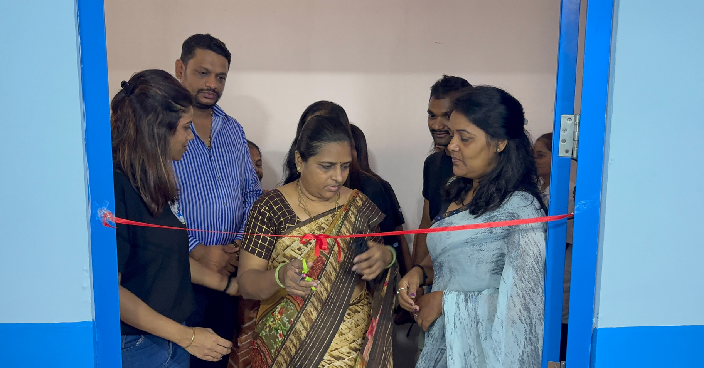

Being Sevak Charitable Trust is committed to improving healthcare accessibility by supporting Dialysis Centers for patients suffering from kidney-related illnesses. Through this initiative, we aim to ensure that underprivileged individuals receive timely dialysis treatment, compassionate care, and better health outcomes. Our mission is to reduce financial burdens and make life-saving healthcare services accessible to those who need them most.

Helping patients access dialysis services at reduced or no cost, ensuring continuity of care.
Supporting modern facilities and professional medical assistance for safe treatment.
Providing a comfortable and supportive environment for patients undergoing regular dialysis sessions.
Promoting awareness about kidney health, prevention, and early diagnosis of renal diseases.
Kidney patients often require lifelong dialysis treatment, which can be physically, emotionally, and financially challenging. Through our Dialysis Center Support Program, Being Sevak Charitable Trust helps ensure access to life-saving treatment, enabling patients to live healthier, more dignified lives while reducing the burden on their families.
Explore glimpses of our initiatives, community outreach programs, and the positive impact created through collective efforts.


